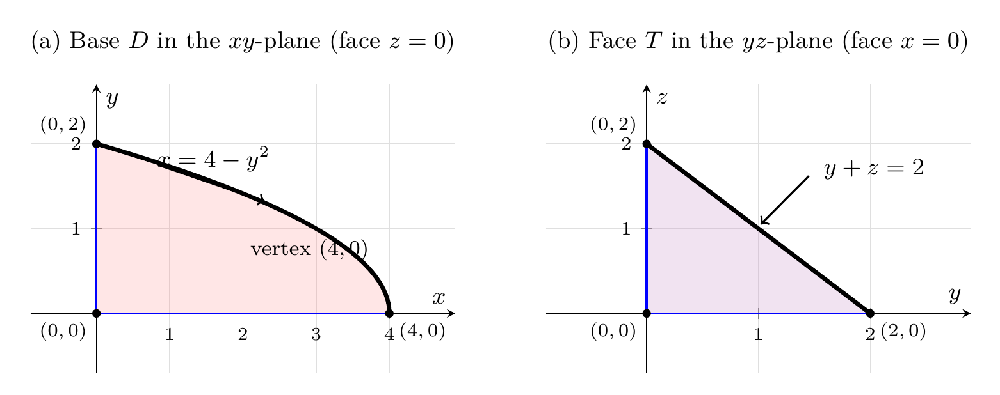
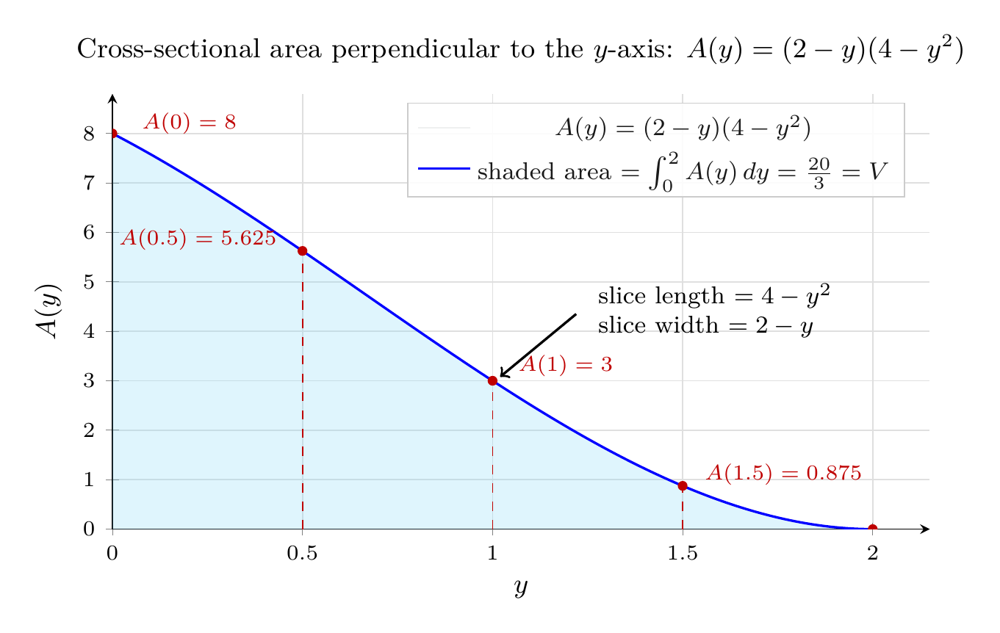

Please solve the problem in the following image.
(Image `20260927_234055_540943_utc_0800_0.png`. Alt text: Image: human_20260927_234055_540943_utc_0800)
20260927_234055_540943_utc_0800_0.png
End of problem
Answer
## Reading the iterated integral
$$
V=\int_0^2\!\int_0^{\,2-y}\!\int_0^{\,4-y^2} dx\,dz\,dy
$$
The differentials read **inside-out**: $dx$ is the innermost integral, then $dz$, then $dy$. So the limits translate directly into inequalities that define the solid $E$:
$$
E=\Big\{(x,y,z):\ 0\le y\le 2,\quad 0\le z\le 2-y,\quad 0\le x\le 4-y^2\Big\}
$$
**Key idea for sketching:** each variable's bounds are functions of the variables integrated *later* (here $y$ is free, $z$ depends on $y$, $x$ depends on $y$). The solid is therefore a "cylinder" whose directrix is swept **parallel to the $x$-axis** — the profile in the $yz$-plane is a fixed shape, and the length in the $x$-direction varies with $y$.
## Step 1 — The five bounding surfaces
| Inequality | Surface | Role |
|---|---|---|
| $y=0$, $y=2$ | planes | back / front (front degenerates to a point-edge) |
| $z=0$, $y+z=2$ | planes | bottom, slanted top |
| $x=0$, $x=4-y^2$ | plane, **parabolic cylinder** | left side, curved right side |
Two facts make the picture easy:
- $x=4-y^2$ does **not** involve $z$, so it is a **parabolic cylinder**: the parabola $x=4-y^2$ in the $xy$-plane, extruded parallel to the $z$-axis.
- $y+z=2$ does **not** involve $x$, so it is a plane extruded parallel to the $x$-axis; it cuts the solid along a slanted roof.
## Step 2 — The two "flat" faces (the projections)
**(a) Bottom face ($z=0$):** $0\le y\le 2,\ 0\le x\le 4-y^2$ — the region under the parabola arc from $(0,2)$ to $(4,0)$, with vertex $(4,0)$.
**(b) Side face ($x=0$):** $0\le y\le 2,\ 0\le z\le 2-y$ — the right triangle with legs $2$ (along $y$) and $2$ (along $z$), hypotenuse $y+z=2$.
These two drawings are the "shadow" data you need; every other face is one of these swept along an axis.
---
\documentclass[border=8pt]{standalone}
\usepackage{pgfplots}
\pgfplotsset{compat=1.18}
\begin{document}
\begin{tikzpicture}
% ---------- (a) base region D in the xy-plane ----------
\begin{axis}[
name=axA, width=7.2cm, height=5.4cm, at={(0,0)}, anchor=south west,
xlabel={$x$}, ylabel={$y$},
xmin=-0.9, xmax=4.9, ymin=-0.7, ymax=2.7,
axis lines=middle,
xtick={0,1,2,3,4}, ytick={0,1,2},
ticklabel style={font=\scriptsize}, label style={font=\small},
title={(a) Base $D$ in the $xy$-plane (face $z=0$)},
title style={font=\small, yshift=2pt},
grid=major, grid style={gray!25},
samples=120, domain=0:4,
]
\addplot[fill=red!45, opacity=0.22, draw=none, smooth] (x, {sqrt(4-x)}) \closedcycle;
\addplot[ultra thick, black, smooth, domain=0:2] ({4-x^2}, {x});
\addplot[thick, blue] coordinates {(0,0) (0,2)};
\addplot[thick, blue] coordinates {(0,0) (4,0)};
\addplot[only marks, mark=*, mark size=1.4pt, black] coordinates {(0,0) (4,0) (0,2)};
\node[font=\scriptsize, anchor=north east] at (axis cs:0,0) {$(0,0)$};
\node[font=\scriptsize, anchor=north west] at (axis cs:4,0) {$(4,0)$};
\node[font=\scriptsize, anchor=south east] at (axis cs:0,2) {$(0,2)$};
\draw[->, thick] (axis cs:0.85,1.75) -- (axis cs:2.3,1.32);
\node[font=\small, anchor=west] at (axis cs:0.7,1.82) {$x=4-y^2$};
\node[font=\footnotesize, anchor=east] at (axis cs:3.85,0.75) {vertex $(4,0)$};
\end{axis}
% ---------- (b) face T in the yz-plane ----------
\begin{axis}[
width=7.2cm, height=5.4cm, at={(axA.south east)}, anchor=south west, xshift=1.2cm,
xlabel={$y$}, ylabel={$z$},
xmin=-0.9, xmax=2.9, ymin=-0.7, ymax=2.7,
axis lines=middle,
xtick={0,1,2}, ytick={0,1,2},
ticklabel style={font=\scriptsize}, label style={font=\small},
title={(b) Face $T$ in the $yz$-plane (face $x=0$)},
title style={font=\small, yshift=2pt},
grid=major, grid style={gray!25},
]
\addplot[fill=violet!45, opacity=0.24, draw=none] coordinates {(0,0) (2,0) (0,2)} \closedcycle;
\addplot[thick, blue] coordinates {(0,0) (2,0)};
\addplot[thick, blue] coordinates {(0,0) (0,2)};
\addplot[ultra thick, black] coordinates {(0,2) (2,0)};
\addplot[only marks, mark=*, mark size=1.4pt, black] coordinates {(0,0) (2,0) (0,2)};
\node[font=\scriptsize, anchor=north east] at (axis cs:0,0) {$(0,0)$};
\node[font=\scriptsize, anchor=north west] at (axis cs:2,0) {$(2,0)$};
\node[font=\scriptsize, anchor=south east] at (axis cs:0,2) {$(0,2)$};
\draw[->, thick] (axis cs:1.45,1.62) -- (axis cs:1.02,1.05);
\node[font=\small, anchor=west] at (axis cs:1.5,1.70) {$y+z=2$};
\end{axis}
\end{tikzpicture}
\end{document}

pgfplots_0.png
---
## Step 3 — Assemble the solid
Take the triangular face $T$ in the $yz$-plane (vertices $(0,0,0),(0,2,0),(0,0,2)$) and shoot rays in the $+x$ direction. A ray at height $y$ travels from $x=0$ until it hits the parabolic cylinder $x=4-y^2$, a distance $4-y^2$. Because $4-y^2$ shrinks to $0$ as $y\to 2$, the solid tapers to the single point $(0,2,0)$.
**Vertices of the solid:** $(0,0,0),\ (4,0,0),\ (0,0,2),\ (4,0,2),\ (0,2,0)$.
**Faces:**
1. $y=0$: rectangle $0\le x\le 4,\ 0\le z\le 2$ (the back wall).
2. $z=0$: parabolic base $D$ (panel (a) above).
3. $x=0$: right triangle $T$ (panel (b) above).
4. $y+z=2$: slanted roof — a curved "ramp" bounded by the segments from $(0,0,2)$ to $(4,0,2)$ and the point $(0,2,0)$.
5. $x=4-y^2$: the curved parabolic-cylinder wall, running between the black arc (in $z=0$) and the blue arc (in the roof $y+z=2$).
So the solid looks like a **wedge with one rounded (parabolic) side wall**, of height $2$ at $y=0$ shrinking to $0$ at $y=2$.
---
pgfplots_1.png
---
## Step 4 — Evaluate the integral (checks the sketch)
Slice the solid by planes $y=\text{const}$. Each slice is a **rectangle** of length $4-y^2$ (in $x$) and width $2-y$ (in $z$), so
$$
A(y)=(2-y)(4-y^2)=8-4y-2y^2+y^3
$$
and $V=\int_0^2 A(y)\,dy$. Carrying out the three integrations in order:
$$
\int_0^{4-y^2}dx=4-y^2
$$
$$
\int_0^{2-y}(4-y^2)\,dz=(4-y^2)(2-y)=8-4y-2y^2+y^3
$$
$$
\int_0^2\!\left(8-4y-2y^2+y^3\right)dy
=\left[8y-2y^2-\tfrac{2}{3}y^3+\tfrac{1}{4}y^4\right]_0^{2}
=16-8-\tfrac{16}{3}+4=12-\tfrac{16}{3}=\tfrac{20}{3}
$$
Sanity checks performed: the area of the base is $\int_0^2(4-y^2)dy=\tfrac{16}{3}$ (same value computed in the other order, $\int_0^4\sqrt{4-x}\,dx=\tfrac{16}{3}$), $A(0)=8>0$ and $A(2)=0$ matches the taper to a point, and a Monte-Carlo estimate of the region $\{x+y^2\le 4,\ y+z\le 2,\ x,y,z\ge0\}$ gives $\approx 6.69$ against the exact $6.6\overline{6}$.
---
\documentclass[border=8pt]{standalone}
\usepackage{pgfplots}
\pgfplotsset{compat=1.18}
\begin{document}
\begin{tikzpicture}
\begin{axis}[
width=11cm, height=6.6cm,
xlabel={$y$}, ylabel={$A(y)$},
xmin=0, xmax=2.15, ymin=0, ymax=8.8,
xtick={0,0.5,1.0,1.5,2.0}, ytick={0,1,2,3,4,5,6,7,8},
ticklabel style={font=\scriptsize},
label style={font=\small},
title={Cross-sectional area perpendicular to the $y$-axis: $A(y)=(2-y)(4-y^2)$},
title style={font=\small},
grid=major, grid style={gray!25},
axis x line=left, axis y line=left,
legend style={font=\footnotesize, at={(0.97,0.98)}, anchor=north east,
fill=white, fill opacity=0.9, draw=gray!40},
]
\addplot[fill=cyan!45, opacity=0.28, draw=none, domain=0:2, samples=200]
({x}, {(2-x)*(4-x^2)}) \closedcycle;
\addplot[thick, blue, domain=0:2, samples=200, mark=none] ({x}, {(2-x)*(4-x^2)});
\addlegendentry{$A(y)=(2-y)(4-y^2)$}
\addlegendimage{empty legend}
\addlegendentry{shaded area $=\int_0^2 A(y)\,dy=\frac{20}{3}=V$}
\draw[red!75!black, dashed, thin] (axis cs:0.5,0) -- (axis cs:0.5,5.625);
\draw[red!75!black, dashed, thin] (axis cs:1.0,0) -- (axis cs:1.0,3);
\draw[red!75!black, dashed, thin] (axis cs:1.5,0) -- (axis cs:1.5,0.875);
\fill[red!75!black] (axis cs:0,8) circle (1.6pt);
\fill[red!75!black] (axis cs:0.5,5.625) circle (1.6pt);
\fill[red!75!black] (axis cs:1.0,3) circle (1.6pt);
\fill[red!75!black] (axis cs:1.5,0.875) circle (1.6pt);
\fill[red!75!black] (axis cs:2.0,0) circle (1.6pt);
\node[font=\scriptsize, red!75!black, anchor=west] at (axis cs:0.05,8.20) {$A(0)=8$};
\node[font=\scriptsize, red!75!black, anchor=east] at (axis cs:0.46,5.85) {$A(0.5)=5.625$};
\node[font=\scriptsize, red!75!black, anchor=west] at (axis cs:1.04,3.30) {$A(1)=3$};
\node[font=\scriptsize, red!75!black, anchor=west] at (axis cs:1.53,1.10) {$A(1.5)=0.875$};
\node[font=\scriptsize, red!75!black, anchor=north east] at (axis cs:1.98,0.02) {$A(2)=0$};
\draw[->, thick] (axis cs:1.22,4.35) -- (axis cs:1.02,3.08);
\node[font=\footnotesize, align=left, anchor=west] at (axis cs:1.25,4.42)
{slice length $=4-y^2$\\ slice width $=2-y$};
\end{axis}
\end{tikzpicture}
\end{document}

pgfplots_2.png
---
## Conclusion
The iterated integral describes the wedge-shaped solid bounded by the coordinate planes $x=0$, $z=0$, the plane $y+z=2$, and the parabolic cylinder $x=4-y^2$, with $y$ running from $0$ to $2$. Its cross-sections perpendicular to the $y$-axis are rectangles of area $A(y)=(2-y)(4-y^2)$, shrinking to a point at $y=2$.
$$
\boxed{\;E=\{(x,y,z):\ 0\le y\le 2,\ 0\le z\le 2-y,\ 0\le x\le 4-y^2\}\ \text{— wedge under } y+z=2 \text{ inside the parabolic cylinder } x=4-y^2,\quad V=\dfrac{20}{3}\;}
$$
**How to handle any problem of this type:** (1) rewrite the integral as a chain of inequalities, remembering the differentials are ordered innermost-first; (2) notice which variables are *missing* from each bound — a bound missing $z$ is a cylinder extruded along $z$, a bound missing $x$ is a plane/cylinder extruded along $x$; (3) draw the two or three coordinate-plane traces (they are the "profile" curves); (4) sweep the profile along the extrusion direction and taper/shrink where a bound goes to zero; (5) optionally evaluate as $\int A(y)\,dy$ to confirm the picture (positive, vanishing end-slices, etc.).